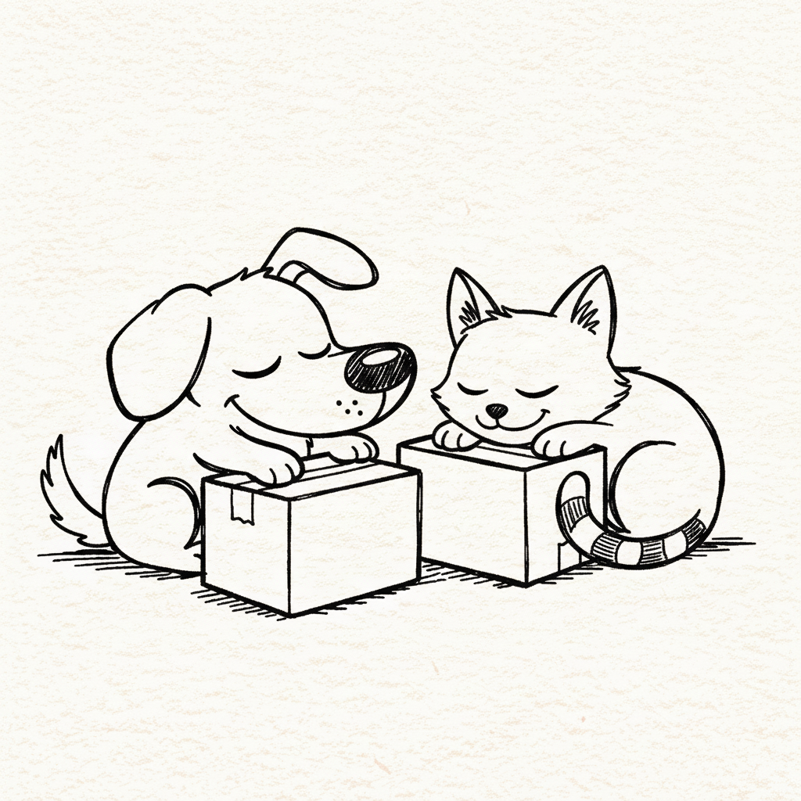
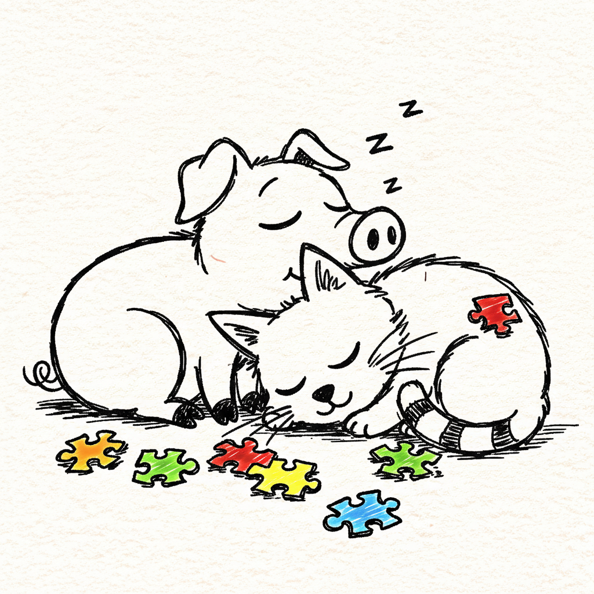

- 猫は24時間のうち約15%をREM睡眠（夢を見ている可能性が高い段階）で過ごす
- 豚は同じ24時間で約11%と、猫よりやや少ない
- 猫の脳の一部を実験的に働かなくすると、REM中に獲物を追いかけるような動きが観察された
- 子豚のREM睡眠は生後1週目から5週目にかけて急速に減っていく
- 「REM睡眠=記憶が定着する」という説には、実は研究者の間でも賛否がある
ソファの上でヒゲをヒクヒクさせながら眠る猫と、藁の上で仲間と体を寄せ合ってぐっすり眠る豚。どちらも「気持ちよさそうに眠っている」姿は見ていて飽きませんが、脳の中で起きていることは同じではありません。20年以上、豚や鶏の飼育現場に立ち会ってきた身としても、豚が眠っている間にピクピクと脚を動かす瞬間を何度も目にしてきました。あれは本当に「夢」を見ているのでしょうか。今回は「REM睡眠（レム睡眠）」という切り口から、猫と豚の眠りの質を研究データをもとに比べてみます。
そもそもREM睡眠とは何か
哺乳類の眠りは大きく「ノンレム睡眠（脳を休める深い眠り）」と「REM睡眠（体は休んでいるのに脳が活発に動く眠り）」の2種類に分けられます。REMは「Rapid Eye Movement（急速眼球運動）」の略で、まぶたの下で眼球がすばやく動くことが名前の由来です。この段階では全身の筋肉の緊張がゆるみ、まるで金縛りのような状態になる一方、脳波は起きているときに近い活発なパターンを示します。人がREM睡眠中に目覚めると鮮明な夢を報告することが多いため、動物のREM睡眠も「夢を見ている状態」の目安として扱われています。
図1: 覚醒 → ノンレム睡眠 → REM睡眠 のサイクルは、一晩(または一日)のうちに何度も繰り返される

写真: 丸まって眠る猫
猫のREM睡眠——「獲物を追う夢」を示した実験
実は、REM睡眠という現象が最初に詳しく調べられた動物の一つが猫です。1950年代後半、フランスの生理学者による一連の研究で、脳波を24時間連続で記録したところ、猫は1日のうち約35%を覚醒、約50%を浅いノンレム睡眠、そして残りの約15%をREM睡眠に費やしていることがわかりました。人間のREM睡眠の割合（成人でおよそ20〜25%）と比べるとやや少ないものの、哺乳類の中では比較的高い水準です。
さらに興味深いのは、REM睡眠中に体の動きを止めている脳幹の一部（筋肉の緊張を抑える回路）を実験的に働かなくした猫を観察した研究です。すると猫は眠ったまま、まるで見えない獲物に忍び寄って飛びかかるような動作や、頭を左右に振って威嚇するような動きを見せました。これは、猫のREM睡眠中の脳が「狩り」に関連した記憶や行動パターンを再生している可能性を示す、古典的だけれど今も引用され続ける証拠です。
豚のREM睡眠——群れで眠る動物の事情
1980年代にカナダの大学で行われた家畜豚の24時間脳波測定によると、豚は1日のうち約46.5%を覚醒、約15.9%をうとうとした状態、約26.7%を深いノンレム睡眠、そして約10.9%をREM睡眠に費やすと報告されています。REM睡眠1回あたりの平均的な長さは3.3分ほどで、覚醒→うとうと→ノンレム→REMという一連のサイクルは平均13分程度で1周し、これが1日に何十回も繰り返されます。実際に畜舎で豚を観察していても、寝ている最中に脚がピクッと動いたり、鼻先がヒクヒクしたりする瞬間があり、これはREM睡眠に入っているサインだと考えると腑に落ちます。
子豚を対象にした観察研究では、生後1週目から5週目にかけてREM睡眠の割合が明確に減っていくことも報告されています。人間の赤ちゃんも新生児期にREM睡眠（もしくはそれに近い「活動睡眠」）の割合が非常に高く、成長とともに減っていくことが知られており、豚でも似た発達パターンが見られるのは興味深い共通点です。

写真: 群れで体を寄せ合って眠る子豚
24時間の内訳をグラフで比較
図2: 猫は豚に比べて、24時間の中でREM睡眠が占める割合がやや高い
| 項目 | 猫 | 豚 |
|---|---|---|
| 1日のREM睡眠の割合 | 約15% | 約11% |
| REM1回あたりの目安 | 数分単位 | 平均約3.3分 |
| 睡眠サイクル1周の目安 | 短いサイクルを反復 | 平均約13分 |
| 成長に伴う変化 | 子猫期は特にREMが多い | 生後1〜5週で急速に減少 |
なぜ差が出るのか——「安心して眠れる場所」という視点
哺乳類全体を比較した系統的な研究では、REM睡眠の量を左右する要因として「ノンレム睡眠の量が多いこと」「安全な環境で眠れること」「生まれたばかりの発達段階が未熟であること」の3つが挙げられています。猫は単独で狩りをする動物であり、飼育下や安全な巣穴のような場所を選んで丸くなって眠る習性があります。一方で豚を含む偶蹄目のグループ（牛やキリンなども含む）は、進化的にはREM睡眠の量が比較的少ない部類に入るとされ、群れで過ごしながらも周囲への警戒をある程度保つ必要があったことが関係している可能性があります。もちろんこれは動物種全体にまたがる大きな傾向の話であり、個体差や飼育環境によっても変わりうる点には注意が必要です。
REM睡眠は本当に記憶を固定するのか——賛否両論
「REM睡眠中に記憶が整理・定着される」という仮説は広く知られていますが、実はすべての研究者が同意しているわけではありません。支持する立場の研究では、記憶に関わる脳の複数の領域（扁桃体・海馬・前頭前野をつなぐネットワーク）がREM睡眠中に強く活動すること、特に感情が伴う記憶や恐怖の記憶の定着に関わっている可能性が指摘されています。人を対象にした研究でも、新しい言語を集中的に学習した直後の晩はREM睡眠の割合が増え、その増加幅が大きい人ほど習得の成果が高かったという報告もあります。
一方で懐疑的な立場の研究者は、動物種を横断した比較データを根拠に反論しています。たとえば、REM睡眠の量が非常に多いとされるカモノハシや一部の有袋類は、特別に学習能力が高いわけではありません。逆にクジラやイルカのなかまはREM睡眠がほとんど見られない、あるいは極端に少ないにもかかわらず、高い学習能力を持つことが知られています。REM睡眠を人為的に減らしても記憶力に大きな悪影響が出なかったという実験結果も複数報告されており、「REM睡眠の量」と「記憶力・学習能力」を単純に結びつけるのは早計だという見方も根強くあります。
まとめ——猫と豚、どちらがよく夢を見ている？
1日の睡眠に占める割合という単純な物差しで見れば、猫（約15%）は豚（約11%）よりもREM睡眠の割合がやや高く、「夢を見ている可能性が高い時間」は猫の方が長いと言えそうです。ただし、REM睡眠がそのまま記憶の定着や夢の内容の豊かさに直結するかどうかは、まだ研究者の間でも決着がついていないテーマです。眠っている猫や豚がピクピクと動く姿は、単なる筋肉の反射ではなく、脳が何かを「再生」しているサインかもしれない——そう考えると、日々のなにげない寝姿の見え方も、少し変わってくるのではないでしょうか。